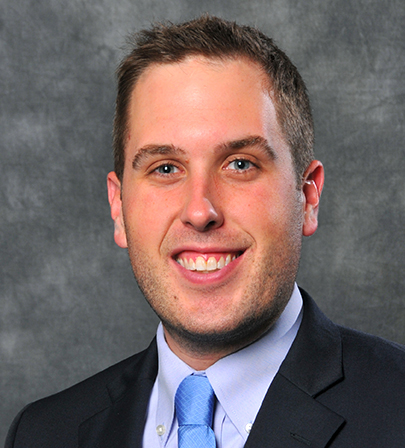

Shaun Currie is a student at Northwestern University's Kellogg School of Management. Prior to Kellogg, Shaun was the Director of Research at Manalapan Oracle Capital Management, a long/short equity manager. Shaun also managed with own equity research and consulting business. Shaun is a graduate of Villanova University.
Equity research and consulting services for small businesses and start-ups
Manalapan Oracle is a long/short equity manager with $300MM in AUM. At Manalapan Oracle, Shaun oversaw the firm's 4-person research team.